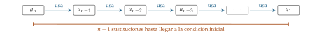
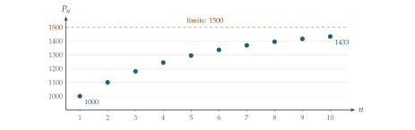
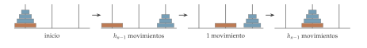

Para arrancarDice la leyenda que unos monjes mueven 64 discos de oro en las torres de Hanói y que, al terminar, se acaba el mundo. Con una recurrencia sabremos cuánto les falta.
Al terminar este capítulo vas a poder
identificar el orden y la condición inicial de una relación de recurrencia y calcular sus primeros términos;
resolver una recurrencia de primer orden con el método de iteraciones: sustituir hacia atrás, ver el patrón y escribir la fórmula;
aplicar la fórmula cerrada de an=ran−1+c (con r=1);
plantear y resolver problemas de ahorro, población y torres de Hanói.
En el capítulo anterior viste que una sucesión puede darse por una regla que usa los términos anteriores. Esa regla es una recurrencia, y es la forma más natural de describir un proceso: «cada mes el saldo crece un 1 % y se suma un abono». Lo que te falta es el camino inverso: pasar de la regla a una fórmula que te dé a100 sin calcular los 99 términos anteriores.
9.1 Qué es una recurrencia
Relación de recurrencia y condición inicial
Una relación de recurrencia es una regla que da an en función de términos anteriores de la sucesión. Es de primer orden si solo usa an−1. La condición inicial es el valor del primer término (por ejemplo a1), que arranca la cadena; sin ella la regla no determina una sucesión única.
Por ejemplo, an=an−1+3 describe tanto 2,5,8,… como 0,3,6,…: lo que las distingue es la condición inicial, a1=2 en la primera y a1=0 en la segunda.
Para cada relación, di el orden y calcula los cinco primeros términos: (a) an=3an−1−1, a1=2. (b) bn=bn−1+n, b1=2.
Soluciónintenta primero
(a) Orden.
Solo aparece an−1: es de primer orden, y una condición inicial basta.
(a) Términos.
Parte de a1=2 y aplica la regla una y otra vez: a2=3(2)−1=5, a3=3(5)−1=14, a4=3(14)−1=41, a5=3(41)−1=122.
(b) Términos.
También es de primer orden, pero lo que se suma no es una constante sino n, que cambia en cada paso: b2=2+2=4, b3=4+3=7, b4=7+4=11, b5=11+5=16.
(a) 2,5,14,41,122,… (b) 2,4,7,11,16,… Las dos son de primer orden.
Calcular así funciona, pero obliga a pasar por todos los términos intermedios. Resolver la recurrencia es encontrar una fórmula cerrada: una expresión de an que dependa solo de n. El método más directo para recurrencias de primer orden es el de iteraciones.
9.2 El método de iteraciones
Método de iteraciones
Se escribe an con la regla; en esa expresión se reemplaza an−1 con la misma regla, luego an−2, y así varias veces sin simplificar de más. Cuando el patrón se ve, se escribe el paso general (tras k sustituciones) y se toma k=n−1 para que aparezca a1.
Receta en cuatro pasos
Sustituye tres o cuatro veces, una línea debajo de la otra, sin simplificar: deja las potencias y los paréntesis visibles.
Lee el patrón tras k sustituciones: qué hay delante de an−k y qué se ha acumulado al final.
Llega a a1 con k=n−1 y reemplaza su valor.
Simplifica la suma que quedó (casi siempre una P.A. o una P.G. del capítulo anterior) y comprueba con a2 y a3.
El recorrido es siempre el mismo: de an hacia atrás hasta la condición inicial.

Cada sustitución baja un lugar. Tras n−1 pasos, an queda escrito con a1, que es un número conocido.
Ahora el ejemplo central. Mira las sustituciones una debajo de otra y fíjate en dos cosas: cómo crece la potencia de 2 delante del término viejo, y qué se va acumulando al final.
Delante del término viejo hay 2k (la potencia sube una por línea). Al final se acumulan los términos 3,2⋅3,22⋅3,…, es decir, 3(1+2+22+⋯+2k−1). Conjetura, tras k sustituciones: an=2kan−k+3(2k−1+⋯+22+2+1).
Llega a la condición inicial.
Toma k=n−1, de modo que an−k=a1=1: an=2n−1⋅1+3(2n−2+⋯+2+1).
Suma la progresión geométrica.
Entre paréntesis hay n−1 términos de razón 2 y primer término 1, así que suman 2−12n−1−1=2n−1−1. Entonces an=2n−1+3(2n−1−1)=4⋅2n−1−3=2n+1−3. Esta fórmula es una conjetura hasta que se comprueba por inducción, como aprendiste en el capítulo 4. Aquí la verificamos con los primeros términos: a2=2(1)+3=5 y la fórmula da 23−3=5; a3=2(5)+3=13 y da 24−3=13.
Calcula a10.
a10=211−3=2045.
an=2n+1−3, y a10=2045.
El método sirve también cuando lo que se suma cambia de un paso a otro, como en bn=bn−1+n, b1=2 del primer ejemplo. Iterando, bn=bn−1+n=bn−2+(n−1)+n=bn−3+(n−2)+(n−1)+n⋮=b1+2+3+⋯+n=1+(1+2+⋯+n)=1+2n(n+1), donde la última suma es la de Gauss del capítulo 4. Con n=5 da 1+15=16, el valor que ya habías calculado. Aquí no hay fórmula lista para consultar; el método es lo que te resuelve el problema.
El resultado del ejemplo no depende de que los números sean estos. Cada recurrencia an=ran−1+c se resuelve con el mismo recorrido, y las sustituciones llevan siempre a una suma geométrica. Por eso la solución se puede enunciar una sola vez.
9.3 La fórmula cerrada de an=ran−1+c
Recurrencia an=ran−1+c con r=1
Si a1 es el primer término, r=1 y c es una constante, entonces an=rn−1a1+cr−1rn−1−1. Se cumple porque el método de iteraciones deja siempre an=rn−1a1+c(rn−2+⋯+r+1), y el paréntesis es una suma geométrica. La fórmula se comprueba por inducción, como en el capítulo 4. Si r=1 la recurrencia es an=an−1+c, una P.A. de diferencia c, y vale an=a1+(n−1)c.
Compruébalo con el ejemplo anterior: r=2, c=3, a1=1 da an=2n−1+3(2n−1−1), que es lo que obtuviste iterando. Usa la fórmula cuando la recurrencia tenga esa forma; reserva las iteraciones para las que no la tengan, como bn=bn−1+n del primer ejemplo.
Qué le pasa a an según r
Con r=1, la fórmula se puede escribir como an=rn−1(a1−L)+L, con L=1−rc.
Si ∣r∣>1, los términos se alejan: crecen sin límite (o alternan de signo si r<0).
Si ∣r∣<1, el término rn−1 se apaga y an se acerca a L.
Así, en la población con r=0,8 y c=300 se tiene L=300/0,2=1500.
El error de siempre
Dos tropiezos con la fórmula. El primero: poner rn en vez de rn−1. La fórmula parte del primer término a1, y de a1 a an hay n−1 pasos; sustituye n=1 y debe darte a1. El segundo: usarla con r=1, que obliga a dividir por r−1=0. En ese caso no hay fórmula que memorizar: es una P.A. Y si tu sucesión empieza en a0, el exponente es n, no n−1.
InteractivoLa recurrencia aₙ = r·aₙ₋₁ + c
Mueve r, c y a₀; observa cuándo la sucesión crece, se estabiliza u oscila.
9.4 Problemas de aplicación
El paso difícil de un problema de aplicación no es la fórmula sino plantear la recurrencia. Pregúntate: ¿qué le pasa al valor de un período al siguiente? Lo que se multiplica es r; lo que se suma o se resta cada vez es c.
Ejemplo 9.3· Ahorro con interés compuesto y abonos
Abres una cuenta con $500 000. Cada mes la cuenta paga un interés del 1 % sobre el saldo, y al final del mes depositas un abono de $200 000. Sea an el saldo al comenzar el mes n. ¿Cuánto hay en la cuenta al comenzar el mes 13, es decir, después de un año?
Soluciónintenta primero
Plantea la recurrencia.
Del mes n−1 al mes n, el saldo se multiplica por 1,01 (el interés) y se suma 200000 (el abono): an=1,01an−1+200000,a1=500000. Es de la forma ran−1+c con r=1,01=1 y c=200000.
Aplica la fórmula con n=13.
a13=1,0112⋅500000+200000⋅0,011,0112−1.
Calcula.
Con 1,0112≈1,126825: el primer sumando es ≈563413 y el segundo es 200000⋅12,6825≈2536501.
Después de un año hay unos $3099913 en la cuenta.
🎨 Mira el problema · muévelo túLa alcancía
Cada pila de monedas es el saldo de un mes. Cambia el interés o el abono.
Cuando c es positivo y r<1 pasa algo distinto: lo que entra compensa lo que sale y la sucesión se estabiliza. Es el caso de las poblaciones con repoblación.
En una laguna hay 1 000 peces. Cada año muere el 20 % de los que hay, y la autoridad ambiental siembra 300 peces nuevos. Sea Pn la población en el año n, con P1=1000. (a) Halla una fórmula para Pn. (b) ¿Qué pasa con la población a largo plazo?
Soluciónintenta primero
(a) Plantea la recurrencia.
Sobrevive el 80 % y se suman 300: Pn=0,8Pn−1+300, con r=0,8, c=300.
(a) Aplica la fórmula.
Pn=0,8n−1⋅1000+300⋅0,8−10,8n−1−1=1000⋅0,8n−1−1500(0,8n−1−1)=1500−500⋅0,8n−1. Verifica: P1=1500−500=1000 y P2=1500−400=1100=0,8(1000)+300.
(b) Largo plazo.
Como 0,8n−1 se acerca a 0 al crecer n, Pn se acerca a 1500 sin alcanzarlo.
(a) Pn=1500−500⋅0,8n−1. (b) La población se estabiliza cerca de 1500 peces.
🎨 Mira el problema · muévelo túLos peces de la laguna
Mueve los años, la mortalidad y la siembra: la población siempre busca su equilibrio.

Los diez primeros términos de Pn=0,8Pn−1+300. Los puntos suben cada vez más despacio hacia 1500 (línea punteada).
El último problema es un clásico: la recurrencia sale de una idea recursiva, no de un porcentaje.
Hay tres varillas y n discos de tamaños distintos apilados en la primera, el mayor abajo. Se pueden mover de a un disco y nunca se coloca uno grande sobre uno pequeño. Sea hn el menor número de movimientos para pasar la pila a otra varilla. Halla hn y calcula cuántos movimientos requieren 10 discos.
Soluciónintenta primero
Plantea la recurrencia.
Para mover n discos: primero se pasan los n−1 de arriba a la varilla auxiliar (hn−1 movimientos), luego se mueve el disco grande (1 movimiento), y por último se pasan los n−1 sobre él (hn−1 movimientos). Con un solo disco basta un movimiento: hn=2hn−1+1,h1=1.
Aplica la fórmula.
Es r=2, c=1, h1=1: hn=2n−1⋅1+1⋅2−12n−1−1=2n−1+2n−1−1=2n−1.
Calcula.
Con 3 discos, h3=7. Con 10 discos, h10=210−1=1023.
hn=2n−1; para 10 discos, 1023 movimientos. Cada disco adicional duplica el trabajo.
🎨 Mira el problema · muévelo túJuega a las torres de Hanói
Toca una varilla para tomar el disco de arriba y otra para soltarlo. ¿Puedes hacerlo en 2n−1 movimientos?

Para mover n discos (aquí n=4): se pasan los n−1 de arriba a la varilla auxiliar, se mueve el mayor, y se vuelven a pasar los n−1 encima de él.
Practica tú
Calcula los primeros cinco términos de an=2an−1+5 con a1=1, y di cuál es el orden de la relación.
Respuestaintenta primero
Primer orden. Términos: 1,7,19,43,91.
Resuelve por iteraciones, escribiendo al menos tres sustituciones: an=3an−1+2, a1=1. Calcula a6.
Respuestaintenta primero
an=3n−1+2(3n−2+⋯+3+1)=2⋅3n−1−1; a6=2⋅243−1=485.
Usa la fórmula cerrada para an=4an−1−6 con a1=5. Halla an y a8.
Respuestaintenta primero
an=3⋅4n−1+2; a8=3⋅47+2=49154.
Un crédito de $2 000 000 cobra un interés del 2 % mensual sobre el saldo y se paga con cuotas de $300 000 al final de cada mes. Sea sn el saldo al comenzar el mes n (con s1=2000000). Plantea la recurrencia y calcula el saldo al comenzar el mes 5.
Un cultivo tiene 4 000 bacterias. Cada hora se reduce a la mitad por un antibiótico, pero entran 600 nuevas desde otro recipiente. Halla una fórmula para el número de bacterias bn en la hora n (con b1=4000) y el valor al que tiende.
Respuestaintenta primero
bn=0,5bn−1+600, de donde bn=1200+2800⋅0,5n−1; tiende a 1200 bacterias.
En las torres de Hanói con la regla extra de que cada movimiento debe hacerse a una varilla adyacente a la actual (mover entre extremos requiere pasar por el centro) se obtiene gn=3gn−1+2 con g1=2. Halla gn y calcula los movimientos para n=6 discos.
Respuestaintenta primero
gn=3n−1; g6=729−1=728 movimientos.
Ojo, parcero: errores que veo en los parciales
usar a₀ cuando la condición es a₁ → sustituir n = 1 en la fórmula
aₙ = 2aₙ₋₁ ⇒ aₙ = 2ⁿ → aₙ = a₀·2ⁿ: falta la constante
✦Practica activa
Retos para afianzar las ideas del capítulo: arma la demostración con los bloques en el orden correcto y caza el paso falso de un argumento.
🧩 Ordena la soluciónResolver una recurrencia
Resuelve an=3an−1+2, a0=1.
🔍 Encuentra el errorCondición inicial
Se resuelve an=2an−1 con a1=6.
✎ Repaso del capítulo
Si an=2an−1+3 y a1=1, ¿cuánto vale a4?
a1=1,a2=2⋅1+3=5,a3=2⋅5+3=13,a4=2⋅13+3=29.
La recurrencia an=an−1+5 describe una progresión…
Se suma siempre lo mismo (5): es una progresión aritmética.
En las torres de Hanói con 5 discos, ¿cuántos movimientos mínimos hacen falta?